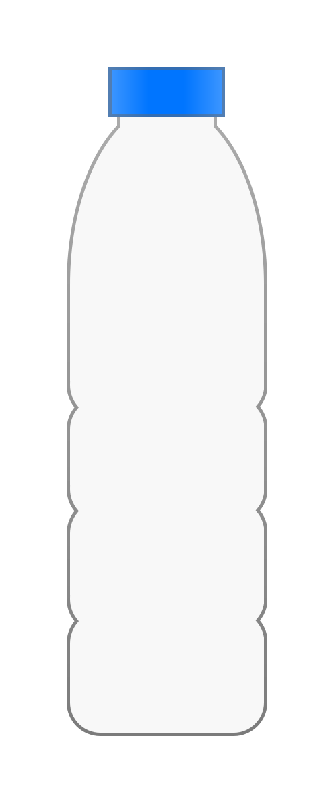
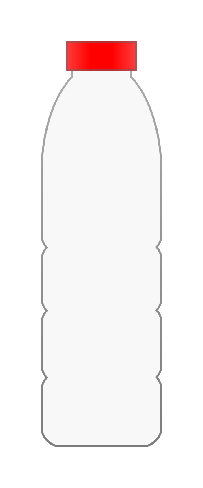

Plastic reycling
in Wellington
is severely lacking




Okay, but what is recycling?
I swear I'm not Robert Topala
Recycling is the process of collecting and processing materials that would otherwise be thrown away as trash and turning them into new products.
(Recycling Basics and Benefits | US EPA, 2013)
or in other words,
Recycling is taking something old and turning it into something
NEW
What's plastic, then?
Hover for definition ⤵